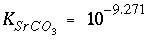
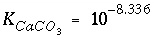
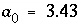
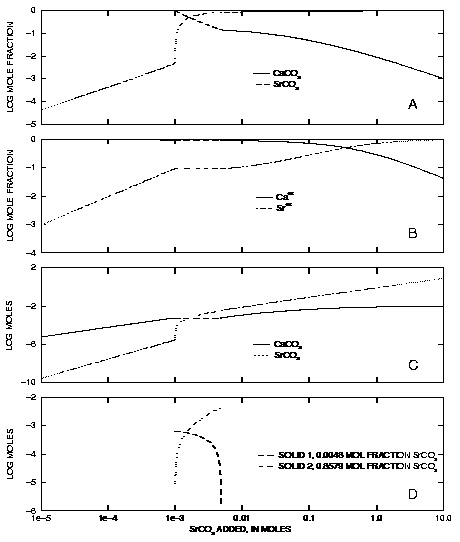
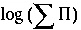

Example 10.--
Aragonite-Strontianite Solid Solution
PHREEQC has the capability to model ideal, multicomponent or nonideal, binary solid solutions. For ideal solid solutions, the activity of each end-member solid is equal to its mole fraction. For nonideal solid solutions, the activity of each end member is the product of the mole fraction and an activity coefficient, which is determined from the mole fraction and Guggenheim excess free-energy parameters. The following example considers an aragonite (CaCO
3
)-strontianite (SrCO
3
) solid solution and demonstrates how the composition of the solid solution and aqueous phase change as strontium carbonate is added to an initially pure calcium carbonate system.
The example is derived from a diagram presented in Glynn and Parkhurst (1992). The equilibrium constants at 25
o
C, 
and 
, and the Guggenheim parameters, 
and  , are derived from Plummer and Busenberg (1987). The input data set is shown in table 29. The
PHASES data block defines the log
K
's for aragonite and strontianite and overrides any data for these minerals that might be present in the database file. The
SOLID_SOLUTIONS data block defines the unitless Guggenheim excess free-energy parameters and the initial composition of the solid solution, which is zero moles of aragonite and strontianite. Initial solution 1 is defined to be a calcium bicarbonate solution. The solution is then equilibrated with aragonite at nearly 1 atm partial pressure of carbon dioxide and saved as the new composition of solution 1.
, are derived from Plummer and Busenberg (1987). The input data set is shown in table 29. The
PHASES data block defines the log
K
's for aragonite and strontianite and overrides any data for these minerals that might be present in the database file. The
SOLID_SOLUTIONS data block defines the unitless Guggenheim excess free-energy parameters and the initial composition of the solid solution, which is zero moles of aragonite and strontianite. Initial solution 1 is defined to be a calcium bicarbonate solution. The solution is then equilibrated with aragonite at nearly 1 atm partial pressure of carbon dioxide and saved as the new composition of solution 1.

Figure 10.
--(A) Mole fraction of strontianite and aragonite in solid solution, (B) mole fraction of calcium and strontium in aqueous phase, (C) moles of strontianite and aragonite in solid solution, and (D) moles of miscibility-gap end members in solid solution, as a function of the amount of strontium carbonate added. Dashed lines indicate compositions within the miscibility gap.
In the next simulation, solution 1 is brought together with the solid solution (
USE keywords) and 5 millimoles of strontium carbonate are added in 500 steps (
REACTION data block). The
PRINT keyword data block excludes all default printing to the output file and includes only the printing defined in the
USER_PRINT data block. The
USER_PRINT data block specifies that the following information about the solid solution be printed to the output file after each reaction step: the simulation number, reaction-step number, amount of strontium carbonate added, 
, mole fractions of strontianite and aragonite, aqueous mole fractions of calcium and strontium, and the composition of the two solids that exist within the miscibility gap. The
SELECTED_OUTPUT data block defines the selected-output file to be
ex10.sel
, cancels any default printing to the selected-output file (
-reset false), and requests that the amount of reaction added at each step (as defined in the
REACTION data block) be written to the selected-output file (
-reaction true). The
USER_PUNCH data block prints additional columns of information to the selected-output file, including all of the information needed to make figure 10. Two additional simulations add successively larger amounts of strontium carbonate to the system up to a total addition of 10 moles.
Table 29.
--Input data set for example 10
TITLE Example 10.--Solid solution of strontianite and aragonite.
PHASES
Strontianite
SrCO3 = CO3-2 + Sr+2
log_k -9.271
Aragonite
CaCO3 = CO3-2 + Ca+2
log_k -8.336
END
SOLID_SOLUTIONS 1
Ca(x)Sr(1-x)CO3
-comp1 Aragonite 0
-comp2 Strontianite 0
-Gugg_nondim 3.43 -1.82
END
SOLUTION 1
-units mmol/kgw
pH 5.93 charge
Ca 3.932
C 7.864
EQUILIBRIUM_PHASES 1
CO2(g) -0.01265 10
Aragonite
SAVE solution 1
END
# Total of 0.00001 to 0.005 moles of SrCO3 added
USE solution 1
USE solid_solution 1
REACTION 1
SrCO3 1.0
.005 in 500 steps
PRINT
-reset false
-user_print true
USER_PRINT
-start
10 sum = (S_S("Strontianite") + S_S("Aragonite"))
20 if sum = 0 THEN GOTO 110
30 xb = S_S("Strontianite")/sum
40 xc = S_S("Aragonite")/sum
50 PRINT "Simulation number: ", SIM_NO
60 PRINT "Reaction step number: ", STEP_NO
70 PRINT "SrCO3 added: ", RXN
80 PRINT "Log Sigma pi: ", LOG10 (ACT("CO3-2") * (ACT("Ca+2") + ACT("Sr+2")))
90 PRINT "XAragonite: ", xc
100 PRINT "XStrontianite: ", xb
110 PRINT "XCa: ", TOT("Ca")/(TOT("Ca") + TOT("Sr"))
120 PRINT "XSr: ", TOT("Sr")/(TOT("Ca") + TOT("Sr"))
130 PRINT "Misc 1: ", MISC1("Ca(x)Sr(1-x)CO3")
140 PRINT "Misc 2: ", MISC2("Ca(x)Sr(1-x)CO3")
-end
SELECTED_OUTPUT
-file ex10.sel
-reset false
-reaction true
USER_PUNCH
-head lg_SigmaPi X_Arag X_Stront X_Ca_aq X_Sr_aq mol_Misc1 mol_Misc2 mol_Arag mol_Stront
-start
10 sum = (S_S("Strontianite") + S_S("Aragonite"))
20 if sum = 0 THEN GOTO 60
30 xb = S_S("Strontianite")/(S_S("Strontianite") + S_S("Aragonite"))
40 xc = S_S("Aragonite")/(S_S("Strontianite") + S_S("Aragonite"))
50 REM Sigma Pi
60 PUNCH LOG10(ACT("CO3-2") * (ACT("Ca+2") + ACT("Sr+2")))
70 PUNCH xc # Mole fraction aragonite
80 PUNCH xb # Mole fraction strontianite
90 PUNCH TOT("Ca")/(TOT("Ca") + TOT("Sr")) # Mole aqueous calcium
100 PUNCH TOT("Sr")/(TOT("Ca") + TOT("Sr")) # Mole aqueous strontium
110 x1 = MISC1("Ca(x)Sr(1-x)CO3")
120 x2 = MISC2("Ca(x)Sr(1-x)CO3")
130 if (xb < x1 OR xb > x2) THEN GOTO 250
140 nc = S_S("Aragonite")
150 nb = S_S("Strontianite")
160 mol2 = ((x1 - 1)/x1)*nb + nc
170 mol2 = mol2 / ( ((x1 -1)/x1)*x2 + (1 - x2))
180 mol1 = (nb - mol2*x2)/x1
190 REM # Moles of misc. end members if in gap
200 PUNCH mol1
210 PUNCH mol2
220 GOTO 300
250 REM # Moles of misc. end members if not in gap
260 PUNCH 1e-10
270 PUNCH 1e-10
300 PUNCH S_S("Aragonite") # Moles aragonite
310 PUNCH S_S("Strontianite") # Moles Strontianite
-end
END
#
# Total of 0.001 to 0.1 moles of SrCO3 added
#
USE solution 1
USE solid_solution 1
REACTION 1
SrCO3 1.0
.1 in 100 steps
END
#
# Total of 0.1 to 10 moles of SrCO3 added
#
USE solution 1
USE solid_solution 1
REACTION 1
SrCO3 1.0
10.0 in 100 steps
END
The excess free-energy parameters describe a nonideal solid solution that has a miscibility gap. For compositions that fall within the miscibility gap, the activities of calcium and strontium within the aqueous phase remain fixed and are in equilibrium with solids of two compositions, one solid with a strontium mole fraction of 0.0048 and one solid with a strontium mole fraction of 0.8579. For the simulations in the example, each incremental addition of strontium carbonate increases the mole fraction of strontium carbonate in the solid until about 0.001 mol of strontium carbonate have been added (fig. 10A). That point is the beginning of the miscibility gap (fig. 10) and the composition of the solid is 0.0048 strontium mole fraction. The next increments of strontium carbonate (up to 0.005 mol strontium carbonate added) produce constant mole fractions of calcium and strontium in the solution (fig. 10B) and equilibrium with both the miscibility-gap end members. However, the amounts of calcium carbonate and strontium carbonate in the solid phases (fig. 10C) and the amounts of each of the miscibility gap end members (fig. 10D) vary with the amount of strontium carbonate added. Finally, the end of the miscibility gap is reached after about 0.005 mol of strontium carbonate have been added. At this point, the solution is in equilibrium with a single solid with a strontium mole fraction of 0.8579. Addition of more strontium carbonate increases the mole fractions of strontium in the aqueous phase and in the solid solution until both mole fractions are nearly 1.0 after the addition of 10 mol of strontium carbonate.
| Next|| Previous || Top |